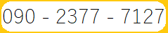

◎メンバー大募集◎
福岡町VBCでは新しい仲間を募集しています🏐
運動が苦手なお子さまも習い事が初めてのお子さまも大歓迎です◎まずは一緒にやってみましょう🎵
募集のご案内
- 対象：小学校1年生から6年生までの男女【学区問わず】
- 日時：火曜 18:30 ～ 20:45、日曜 9:00 ～ 11:45
- 場所：富山県高岡市福岡Ｂ＆Ｇ海洋センター
- 服装：体操服など動きやすい服装
- 持物：内履きズック、飲み物、汗拭き用のタオル
お問い合わせ
LINEかお電話にてご連絡いただき、まずはお気軽に見学・体験にご参加ください。
- ＜LINE＞
- ＜TEL＞ 
※お電話の場合は１５時以降のご連絡をお願いいたします